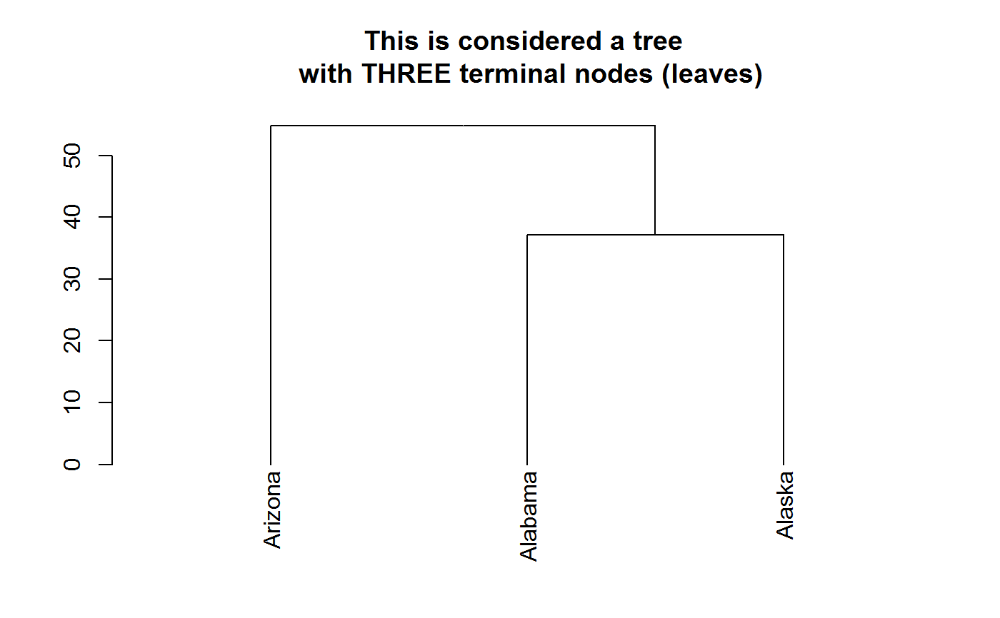

This function counts the number of "practical" terminal nodes (nodes which are not leaves, but has 0 height to them are considered "terminal" nodes). If the tree is standard, that would simply be the number of leaves (only the leaves will have height 0). However, in cases where the tree has several nodes (before the leaves) with 0 height, the count_terminal_nodes counts such nodes as terminal nodes
The function is recursive in that it either returns 1 if it reached a terminal node (either a leaf or a 0 height node), else: it will count the number of terminal nodes in each of its sub-nodes, sum them up, and return them.
count_terminal_nodes(dend_node, ...)
| dend_node | a dendrogram object for which to count its number of terminal nodes (leaves or 0 height nodes). |
|---|---|
| ... | not used |
The number of terminal nodes (excluding the leaves of nodes of height 0)
# define dendrogram object to play with: hc <- hclust(dist(USArrests[1:3, ]), "ave") dend <- as.dendrogram(hc) ### # Trivial case count_terminal_nodes(dend) # 3 terminal nodes#> [1] 3#> [1] 3#> --[dendrogram w/ 2 branches and 3 members at h = 54.8] #> |--leaf "Arizona" #> `--[dendrogram w/ 2 branches and 2 members at h = 37.2] #> |--leaf "Alabama" #> `--leaf "Alaska"#> [1] 2# while we have 3 leaves, in practice we have only 2 terminal nodes # (this is a feature, not a bug.)